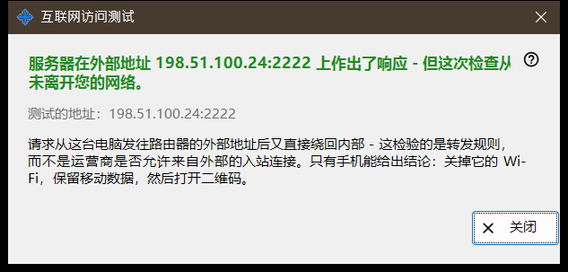
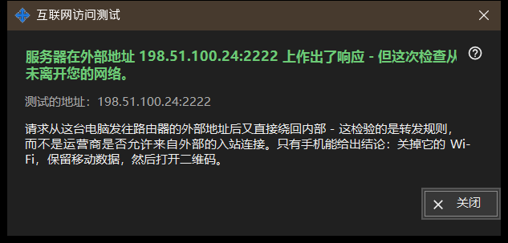

互联网访问测试
用途说明
从这台电脑检查共享地址是否像 SFTP 服务器那样应答。它从主窗口的「测试互联网访问」按钮打开，并显示所测试的地址、结论和说明。


操作顺序
- 打开窗口；它会显示地址并立即开始检查。
- 等待标题行。
- 阅读其下的详细说明行。
- 如果结果不能定论，请在手机上关闭 Wi-Fi、打开移动数据后重复检查。
- 点击「关闭」。
界面元素
测试的地址
「测试的地址：..」显示主机和端口。检查进行时，窗口显示「正在测试 .. 」。如果不知道任何地址，结果是「尚无互联网地址。」；格式错误的地址则给出「地址无效。」。
结论
「SFTP 服务器可访问」- 端口以 SFTP 标识应答。「端口已开放，但 SFTP 无响应」- 端口上有程序在监听，但不是我们的程序；请检查路由器规则是否指向这台电脑和共享端口。在应答之前连接被关闭，可能意味着达到了连接数上限；请重试。这台电脑得不到应答，则说明路由器可能在内部拦截了它自己的地址。
为什么结果可能不能定论
请求从这台电脑发往路由器的外部地址，又直接回到内部，所以它测试的是转发规则，而不是运营商是否允许外部连接进入。只有手机才能最终确定：关闭它的 Wi-Fi，保持移动数据开启，然后打开二维码。如果仍然无法连接，请用「如何设置互联网访问」按钮设置端口转发。